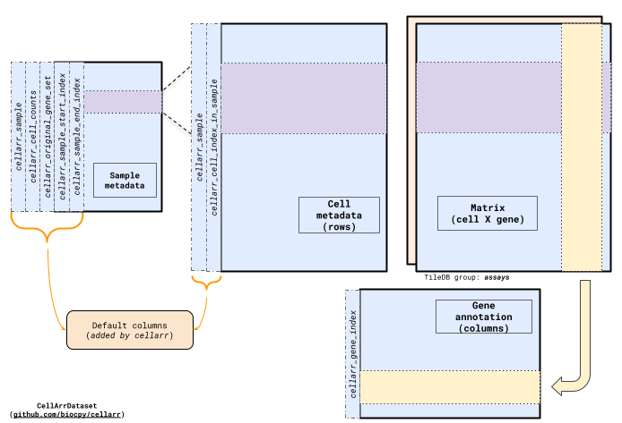

Cell Arrays¶
Cell Arrays is a Python package that provides a TileDB-backed store for large collections of genomic experimental data, such as millions of cells across multiple single-cell experiment objects.
The CellArrDataset is designed to store single-cell RNA-seq
datasets but can be generalized to store any 2-dimensional experimental data.
Install¶
To get started, install the package from PyPI
pip install cellarr
## to include optional dependencies
pip install cellarr[optional]
Usage¶
Build a CellArrDataset¶
Building a CellArrDataset generates 4 TileDB files in the specified output directory:
gene_annotation: A TileDB file containing feature/gene annotations.sample_metadata: A TileDB file containing sample metadata.cell_metadata: A TileDB file containing cell metadata including mapping to the samples they are tagged with insample_metadata.An
assayTileDB group containing various matrices. This allows the package to store multiple different matrices, e.g. ‘counts’, ‘normalized’, ‘scaled’ for the same sample/cell and gene attributes.
The organization is inspired by Bioconductor’s SummarizedExperiment data structure.
The TileDB matrix file is stored in a cell X gene orientation. This orientation is chosen because the fastest-changing dimension as new files are added to the collection is usually the cells rather than genes.

Note: Currently only supports either paths to H5AD or AnnData objects
To build a CellArrDataset from a collection of H5AD or AnnData objects:
import anndata
import numpy as np
import tempfile
from cellarr import build_cellarrdataset, CellArrDataset, MatrixOptions
# Create a temporary directory, this is where the
# output files are created. Pick your location here.
tempdir = tempfile.mkdtemp()
# Read AnnData objects
adata1 = anndata.read_h5ad("path/to/object1.h5ad", "r")
# or just provide the path
adata2 = "path/to/object2.h5ad"
# Build CellArrDataset
dataset = build_cellarrdataset(
output_path=tempdir,
files=[adata1, adata2],
matrix_options=MatrixOptions(matrix_name="counts", dtype=np.int16),
num_threads=2,
)
# Or if the objects contain multiple assays
dataset = build_cellarrdataset(
output_path=tempdir,
files=[adata1, adata2],
matrix_options=[
MatrixOptions(matrix_name="counts", dtype=np.int16),
MatrixOptions(matrix_name="log-norm", dtype=np.float32)
],
num_threads=2,
)
The build process usually involves 4 steps:
Scan the Collection: Scan the entire collection of files to create a unique set of feature ids (e.g. gene symbols). Store this set as the
gene_annotationTileDB file.Sample Metadata: Store sample metadata in
sample_metadataTileDB file. Each file is typically considered a sample, and an automatic mapping is created between files and samples if metadata is not provided.Store Cell Metadata: Store cell metadata in the
cell_metadataTileDB file.Remap and Orient Data: For each dataset in the collection, remap and orient the feature dimension using the feature set from Step 1. This step ensures consistency in gene measurement and order, even if some genes are unmeasured or ordered differently in the original experiments.
Note: The objects to build the CellArrDataset are expected to be fairly consistent, especially along the feature dimension.
if these are AnnData or H5ADobjects, all objects must contain an index (in the var slot) specifying the gene symbols.
Optionally provide cell metadata columns¶
If the cell metadata is inconsistent across datasets, you may provide a list of
columns to standardize during extraction. Any missing columns will be filled with
the default value 'NA', and their data type should be specified as 'ascii' in
CellMetadataOptions. For example, this build process will create a TileDB store
for cell metadata containing the columns 'cellids' and 'tissue'. If any dataset
lacks one of these columns, the missing values will be automatically filled with 'NA'.
dataset = build_cellarrdataset(
output_path=tempdir,
files=[adata1, adata2],
matrix_options=MatrixOptions(dtype=np.float32),
cell_metadata_options=CellMetadataOptions(
column_types={"cellids": "ascii", "tissue": "ascii"}
),
)
print(dataset)
Check out the documentation for more details.
Query a CellArrDataset¶
Users have the option to reuse the dataset object returned when building the dataset or by creating a CellArrDataset object by initializing it to the path where the files were created.
# Create a CellArrDataset object from the existing dataset
dataset = CellArrDataset(dataset_path=tempdir)
# Query data from the dataset
gene_list = ["gene_1", "gene_95", "gene_50"]
expression_data = dataset[0:10, gene_list]
print(expression_data.matrix)
print(expression_data.gene_annotation)
## output 1
<11x3 sparse matrix of type '<class 'numpy.float32'>'
with 9 stored elements in COOrdinate format>
## output 2
cellarr_gene_index
0 gene_1
446 gene_50
945 gene_95
This returns a CellArrDatasetSlice object that contains the matrix and metadata DataFrame’s along the cell and gene axes.
Users can easily convert these to analysis-ready representations
print("as anndata:")
print(expression_data.to_anndata())
print("\n\n as summarizedexperiment:")
print(expression_data.to_summarizedexperiment())
A built-in dataloader for the pytorch-lightning framework¶
The package includes a dataloader in the pytorch-lightning framework for single cells expression profiles, training labels, and study labels. The dataloader uniformly samples across training labels and study labels to create a diverse batch of cells.
This dataloader can be used as a template to create custom dataloaders specific to your needs.
from cellarr.dataloader import DataModule
datamodule = DataModule(
dataset_path="/path/to/cellar/dir",
cell_metadata_uri="cell_metadata",
gene_annotation_uri="gene_annotation",
matrix_uri="assays/counts",
label_column_name="label",
study_column_name="study",
batch_size=1000,
lognorm=True,
target_sum=1e4,
)
The package also includes a simple autoencoder in the pytorch-lightning which makes use of the dataloader. This can be used as a template to create custom architectures and models.
import pytorch_lightning as pl
from cellarr.autoencoder import AutoEncoder
autoencoder = AutoEncoder(
n_genes=len(datamodule.gene_indices),
latent_dim=128,
hidden_dim=[1024, 1024, 1024],
dropout=0.5,
input_dropout=0.4,
residual=False,
)
model_path = "/path/to/model/mymodel/"
params = {
"max_epochs": 500,
"logger": True,
"log_every_n_steps": 1,
"limit_train_batches": 100, # to specify number of batches per epoch
}
trainer = pl.Trainer(**params)
trainer.fit(autoencoder, datamodule=datamodule)
autoencoder.save_all(model_path=model_path)
Check out the documentation for more details.
Note¶
This project has been set up using PyScaffold 4.5. For details and usage information on PyScaffold see https://pyscaffold.org/.